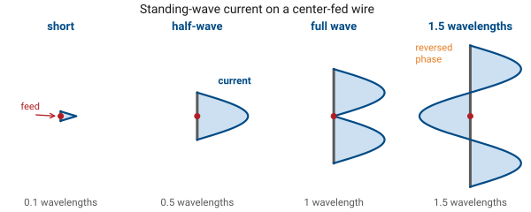
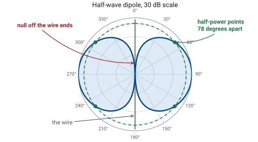
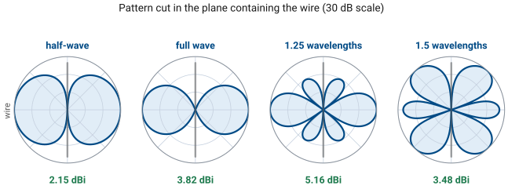
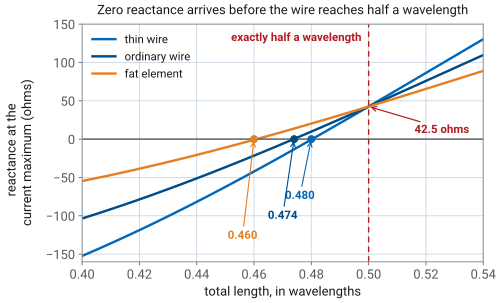

L7 - Simple Resonant Antennas#
Simple Resonant Antennas
Today you spend that answer on hardware.
Lesson 7 · Antennas, Phased Arrays, and Radar Systems · Dr. Neil Rogers
Learning Objectives
- I can explain why the isotropic radiator cannot exist yet anchors every gain specification, and use it as the 0 dBi reference.
- I can obtain the half-wave dipole's pattern, beamwidth, and directivity from its sinusoidal current, and explain how the pattern changes as the dipole gets longer.
- I can state the half-wave dipole's input impedance, explain physically why a resonant wire is slightly shorter than half a wavelength, and compute the VSWR when it is fed by a 50 or 75 ohm line.
- I can calculate the physical dimensions of a resonant dipole at a given frequency and predict its gain and impedance well enough to sanity-check a simulation.
Lesson 6 built the machine: assume a current on a structure, push it through the radiation integral, and out comes the far-field pattern. Today you will extend the math to real hardware. Two antennas form the foundation of the lesson — the isotropic radiator which cannot be built but which every gain number on every datasheet references, and the half-wave dipole, which you can build with basic tools and which you will be simulating next lesson. By the end of this lesson, you will be able to pick a frequency, cut a wire to length, and predict its pattern, its gain, and what a network analyzer will read at its terminals.
The isotropic radiator
An isotropic radiator radiates equally in every direction. Wrap a sphere around it and every square meter of that sphere receives the same power density. Its radiation intensity is simply the radiated power spread over the whole sphere,
so its directivity is exactly \(D = 1\), which is \(0\ \text{dBi}\) — the “i” is literally there to say relative to isotropic.
The Impossible Antenna
An isotropic antenna is a physical impossibility. In order to creat an antenna, we have to separate charge, which inherently produces curves electric field lines, which means at some physical location, the field has to vanish, and a place where the field vanishes is a null.
Every real antenna has at least one null; that is simply a requirement of the physics. The isotropic radiator has no nulls, so it is not an antenna — it is a unit of measurement.
What the fiction buys you
The gain of this theoretical antenna is most useful as a unit of measurement. Recall that dB is a power ratio, so directivity, gain, and effective aperture are all defined as ratios against isotropic. This is why a horn is “16 dBi” rather than “16 dB”. Two related conventions come out of the same reference:
Quantity |
Definition |
Reference |
|---|---|---|
dBi |
gain over an isotropic radiator |
the fiction |
dBd |
gain over a half-wave dipole |
a real antenna |
EIRP |
\(P_t G_t\) — the power an isotropic radiator would need to match your antenna’s peak |
the fiction |
The two decibel scales differ by a constant
Because a half-wave dipole is \(2.15\ \text{dBi}\), the two decibel scales differ by a constant:
Effective Isotropic Radiated Power
EIRP is the standard measure of antenna power performance. Feeding \(5\ \text{W}\) into a half-wave dipole produces the same peak power density as feeding \(5 \times 1.64 = 8.2\ \text{W}\) into an isotropic radiator, so the EIRP is \(8.2\ \text{W}\), or \(39.1\ \text{dBm}\). One number now describes the transmitter and the antenna together, which is exactly what a link budget needs and exactly what the FCC specifies in their licensing regulations.
Note
Watch the units in the wild. “ERP” usually means effective radiated power referred to a dipole, so ERP and EIRP differ by that same 2.15 dB. Confusing the two changes a link budget by 4.3 dB.
The Short Dipole
Lesson 6 handled the infinitesimal dipole — a current element so short that the current is essentially constant along it. Its pattern is \(\vert F(\theta)\vert = \sin\theta\), a doughnut with its maximum broadside at \(\theta = 90^\circ\) and nulls off the wire ends. Its beamwidth is \(90^\circ\) and its directivity is \(D = 1.5\), or \(1.76\ \text{dBi}\). Its radiation resistance, however, is \(R_r = 80\pi^2 (L/\lambda)^2\) — about \(2\ \Omega\) for a wire a tenth of a wavelength long. \(2\ \Omega\) against a \(50\ \Omega\) line is a hopeless match, and that, not the pattern, is why nobody feeds a short dipole directly.
The Standing Wave
Moving away from the infintesmal wire; as the wire becomes longer and the current is not a constant. So before we can use Lesson 6’s machinery, we need to understand the effects of a variable current feeding our antenna.
To construct our more realistic dipole, start with a two-wire transmission line, open-circuited at the far end. You already know the mathematical form of its current; on an open-circuited line the current must be zero at the open end. Furthermore, the standing wave varies sinusoidally as you move from the open circuit load back towards the source. At a distance \(s\) back from the open end, the current is:
Fold it into a dipole
Now take the open end of that line and fold the two conductors apart until they lie in a straight line, one arm up and one arm down. Congratulations, you have built a center-fed dipole, and inherit the standing wave came with it.
Each arm still ends in an open tip. A point at height \(z\) on the upper arm sits a distance \(s = L/2 - z\) back from its tip, so \(I(z) = I_m \sin[k(L/2 - z)]\). The lower arm is the mirror image, so replacing \(z\) by \(\vert z \vert\) covers both:
Confirm the boundary conditions
At the tips, \(z = \pm L/2\), the sine argument is zero, so \(I = 0\). Current vanishes at both open ends — charge has nowhere further to go.
At the feed, \(I(0) = I_m \sin(kL/2)\). For \(L = \lambda/2\) that is \(I_m \sin(\pi/2) = I_m\): the current maximum lands exactly at the feed. For \(L = \lambda\) it is \(I_m \sin(\pi) = 0\): a current null at the feed. Remember that contrast — it determines the impedance in Part 4.
The current is the excitation, not the solution
This current is an input, not the solution. It is justified by the transmission-line analogy, and it is confirmed to be very close to the truth by measurement and by numerical solvers — but it is not a solution of Maxwell’s equations for a dipole, and for thick or non-resonant wires it is visibly wrong. Everything downstream in this module inherits that assumption and we will be exploring the tradeoffs.
Standing-wave current on the wire

Step 1: set up the radiation integral
We start with the current and the radiation integrals of Lesson 6 provide the rest, and this is the one antenna in the course where we will run that computation end to end.
Lesson 6’s radiation vector is \(\mathbf{N} = \int \mathbf{J}\ e^{+jk\hat{\mathbf r}\cdot\mathbf{r}'}\ dV'\). For a thin wire lying on \(z\), the volume integral collapses to a line integral, the current is \(z\)-directed, and \(\hat{\mathbf r}\cdot\mathbf{r}' = z'\cos\theta\):
The integral folds onto one arm
The current is an even function of \(z'\). Pair each \(z'\) with \(-z'\) and the two exponentials combine into a cosine, which folds the integral onto the upper arm and throws away the imaginary part:
Step 2: evaluate it
This is a relatively straightforward integral. The product-to-sum identity \(\sin A \cos B = \tfrac{1}{2}\left[\sin(A+B) + \sin(A-B)\right]\) turns the integrand into two plain sines, both of which integrate directly. Collecting the result:
Step 3: project and normalize
Lesson 6 showed that a \(z\)-directed current radiates only a \(\theta\) component in the far field, obtained by projection: \(N_\theta = -N_z \sin\theta\). That eliminates one power of \(\sin\theta\):
That is the pattern of a center-fed dipole of any length, within a constant:
Absolute Value and Proportionality
Both the proportionality sign and the magnitude bars are there for a reason. The bars matter because for wires longer than \(\lambda\) the bracket changes sign — that sign flip is how sidelobes end up radiating out of phase with the main lobe. The proportionality matters because normalizing means dividing by the peak of that expression, and the peak is not always 1. For \(L \le \lambda\) it sits at broadside, \(\theta = 90^\circ\), where the expression evaluates to \(1 - \cos\dfrac{kL}{2}\); for longer wires the peak moves off broadside entirely, which is the story at the end of this lesson.
The Half-Wave Dipole Pattern
Set \(L = \lambda/2\), so that \(kL/2 = \pi/2\) and the second cosine vanishes. The broadside peak is then \(1 - 0 = 1\), so this one is already normalized and can be written with an equals sign:
This is the half-wave dipole pattern. The \(\sin\theta\) in the denominator looks like trouble at \(\theta = 0\), but the numerator vanishes there too and the ratio goes quietly to zero. The nulls are still straight off the ends of the wire.
A Single Formula for Every Length
Note
The general formula is not a half-wave result. It holds for any \(L\), and the multi-lobe patterns at the end of this lesson come from the same expression with a different value of \(L\) in it. One integral covers every length, which is the entire purpose of the radiation integral.
The Half-Wave Pattern is a Donut
The half-wave pattern is a donut again, only slightly narrower than the short dipole’s.

Beamwidth and directivity
Solving \(\vert F(\theta)\vert^2 = 1/2\) numerically gives half-power points at \(\theta = 51.0^\circ\) and \(129.0^\circ\), so
Integrating \(\vert F\vert^2\) over the sphere gives the directivity,
Why Double the Wire?
Now look at what doubling the wire actually gained us: the beamwidth went from \(90^\circ\) to \(78^\circ\) and the directivity went from \(1.76\) to \(2.15\ \text{dBi}\). Doubling the wire brought 0.39 dB of directivity.
Pattern vs Impedance
A dipole’s pattern is set by how many wavelengths of current fit on the wire. Its impedance is set by where the current maximum sits relative to the feed. Half a wavelength is the optimal length because it puts the current maximum right at the feed point, and it costs only 0.39 dB of directivity to implement.
Efficiency: gain versus directivity
Copper is a good conductor, so radiation efficiency for a wire dipole is above about 98% and \(G = \eta_{\text{rad}} D\) is within a tenth of a dB of \(D\). For this antenna we can quote gain and directivity interchangeably — but it is still helpful to be in the habit of specifying which one you mean, because for the lossy antennas in Module 4 they diverge significantly.
Longer dipoles grow lobes
Keep stretching the wire past \(\lambda/2\) and the standing wave develops phase reversals: sections of the wire carry current in the opposite direction. Reversed current radiates out of phase with the rest, the contributions interfere, and the single donut breaks into lobes.

The dipole explorer
The interactive animation below is a good way to intuit the effects of length and current distribution on the pattern. Drag the length slider from one end to the other and watch three things at once: the standing-wave current on the wire, the pattern it produces, and the numbers in the pills underneath. Notice that below half a wavelength almost nothing changes — the pattern is essentially the short-dipole donut all the way down to the infintesmal case. This means an electrically small antenna is an impedance problem and not a pattern problem. Then notice that directivity creeps upward until about 1.2 to 1.25 wavelengths, where it peaks near \(5.2\ \text{dBi}\); past that point the main lobe splits and the broadside gain collapses. Park the slider at \(0.50\) and confirm the canonical trio: \(78.1^\circ\), \(2.15\ \text{dBi}\), \(73.1\ \Omega\).
Referred to the current maximum, not the terminals
Note
The resistance and reactance in the interactive widget are referred to the current maximum, not to the terminals. At \(L = \lambda/2\) the current maximum sits at the feed and the two are the same number, which is the case you care about. For other lengths the terminal values are larger by \(1/\sin^2(kL/2)\) — a short dipole’s tiny current-maximum reactance becomes an enormous terminal reactance, which is precisely why short antennas are so hard to feed.
The resistance
The pattern was the easy half. What the transmitter actually sees is the input impedance, and for a thin half-wave dipole both parts of it, we can actually calculate it — the resistance comes from the pattern we just derived and the reactance from one standard result we will name but not re-derive.
Radiation resistance is defined by asking what resistor, carrying the same current, would dissipate the power the antenna radiates:
The Power Integral
If we can compute \(P_\text{rad}\), we can find \(R_r\). Start from Part 3’s pattern. The radiation intensity of the half-wave dipole is
Tricky Integrals
The radiated power is that intensity integrated over the whole sphere. Nothing depends on \(\phi\), so the azimuth integral simply contributes \(2\pi\):
Here the derivation stops being algebra. That integral has no elementary antiderivative. You cannot write the answer in terms of sines, logs, and powers — this is the point where a number enters instead of a formula.
Special Functions
That is not a failure, and it is not unusual. It is the same situation as \(\text{erf}\) in probability: the integral is important enough that somebody tabulated it, gave it a name, and moved on. Antenna work leans on three such special functions, and we will use all of them again:
Look them up, or let a calculator evaluate them; do not try to integrate them. The solution function we need for this integral is:
The result: 73 ohms
Equate the two expressions for \(P_\text{rad}\); the \(\vert I_m \vert^2\) cancels and the antenna’s current level drops out, as it must:
Since \(\eta_0/4\pi = 29.98\ \Omega\), which is \(30\ \Omega\) to better than one tenth of a percent, the result is easy to remember as 30 times 2.4376.
Reactance via Induced EMF Method
A far-field power integral can only ever produce the real part — it accounts for power that leaves. The reactance describes cyclical energy in the near field which never crosses the far-field sphere at all, so no amount of pattern integration will produce it.
Finding the reactance requires a different technique. We will use the induced-EMF method, in which we integrate the field the antenna reflects back against its own current, along the wire. That is a near-field calculation, and we are not going to carry it out here. Its general result contains \(Si\), \(Ci\), and the wire radius \(a\) — meaning that the reactance of a dipole normally depends on how thick the wire is.
Why 42.5 is a clean number
At exactly \(L = \lambda/2\) that dependence disappears. Every term containing the wire radius is multiplied by \(\sin(kL)\), and at \(kL = \pi\),
The wire radius factors out, and what survives is a single special function:
The reactance of a dipole is radius-independent only at exactly \(\lambda/2\). That is why \(42.5\ \Omega\) can be quoted as a clean number at all, while at every other length the reactance depends on how thick the wire is — which is exactly why the three curves in the figure below separate everywhere, but cross at \(\lambda/2\).
Combining Resistance and Reactance for Total Impedance
Put the two halves side by side and the whole impedance is one line, built from two tabulated numbers:
So read the two parts separately. The \(73\ \Omega\) is power leaving and never coming back — the whole point of the antenna. The \(+j42.5\ \Omega\) is the reactive near field of Lesson 5, which does no useful work, and wrecking your match.
The 73.1 Ω is referred to the current maximum
Two limits on that result are worth stating clearly.
The power calculation used \(I_m\), which is the largest current anywhere on the wire. A resistance referred to that point equals the resistance measured at the feed terminals only when the current maximum is physically located at the feed. For a half-wave dipole it is, so the two numbers agree. For a full-wave dipole they do not: a full-wave dipole has a current minimum at the feed, and its feed resistance is enormous — hundreds to thousands of ohms — even though the current-maximum resistance is a moderate \(199\ \Omega\).
Every step above assumed the sinusoidal current from Part 2
How much that matters depends on what you are computing. The pattern shape barely cares: the radiation integral smooths over small errors in the current, so the \(78^\circ\) beamwidth and \(2.15\ \text{dBi}\) hold up well. The impedance cares a great deal, because it depends on the current right at the feed and on the near fields close to the wire. This is the main reason a simulator will not return exactly \(73 + j42.5\ \Omega\). Measuring how large that disagreement is, and deciding whether it matters, is the work of Lesson 8.
Resonance means X_in = 0
Resonance means \(X_{\text{in}} = 0\). At exactly \(\lambda/2\) we are \(42.5\ \Omega\) away from it, and the fix is to make the wire slightly shorter.

Why shorter, physically
The reason is that the wire is electrically longer than it is physically.
End effect. Capacitance between the tips of the dipole — and to the insulators, mast, and everything else nearby — lets charge accumulate past where the metal stops. The standing wave behaves as though the wire continued a little further than it does.
Wire thickness. A fatter element has more end capacitance and a lower characteristic impedance, so it shortens further. This is why a thin wire resonates near \(0.480\lambda\) while a fat tubular element can drop to \(0.46\lambda\).
Both effects slow the wave
Both effects slow the wave traveling on the wire relative to free space, and a slower wave needs less physical length to fit the same electrical half wavelength. For ordinary wire the answer lands in the range \(0.47\lambda\) to \(0.48\lambda\), and the resistance drops with the length, to roughly \(70\ \Omega\).
Rule of thumb — the 5% rule
Cut a resonant dipole to about 95% of a half wavelength:
Cut it long and trim. You can always remove wire.
What the match looks like
With a resonant dipole in hand, the match is a one-line calculation. Using \(\Gamma = (Z_L - Z_0)/(Z_L + Z_0)\) and \(\text{VSWR} = (1+\vert\Gamma\vert)/(1-\vert\Gamma\vert)\) from Lesson 4:
Line |
Load used |
\(\vert \Gamma \vert\) |
VSWR |
|---|---|---|---|
\(50\ \Omega\) |
\(73 + j42.5\) (untrimmed) |
0.37 |
2.18 |
\(50\ \Omega\) |
\(70 + j0\) (resonant) |
0.17 |
1.40 |
\(75\ \Omega\) |
\(73 + j42.5\) (untrimmed) |
0.28 |
1.76 |
\(75\ \Omega\) |
\(70 + j0\) (resonant) |
0.03 |
1.07 |
Kill the reactance first
Trimming to resonance is worth more than changing the cable. On a \(50\ \Omega\) line, removing the \(+j42.5\ \Omega\) of reactance takes the VSWR from 2.18 to 1.40. Leaving the reactance in place and switching to a \(75\ \Omega\) cable only reaches 1.76. Kill the reactance first; worry about the resistance second.
Reading it off a Smith chart
Those four rows are the same information a Smith chart shows at a glance, and you will be reading charts for the rest of the course — every VNA in the lab draws one. The chart is the complex reflection coefficient plane. The center is a perfect match, the rim is total reflection, the upper half is inductive and the lower half capacitive.
Four kinds of object are drawn on the chart below, and each is worth naming before you touch the slider.
The chart’s grid and VSWR circles
The faint gray grid is the chart itself, printed once and never moving. The circles that all pass through the right-hand point are lines of constant resistance; the arcs curving away from that point are lines of constant reactance. Together they let you read an impedance off any position.
The amber dashed circles are lines of constant VSWR, centered on the match point at 2:1 and 3:1. Anything inside the 2:1 circle is a usable match.
The locus is the antenna, and its markers
The blue curve is the antenna. It is the impedance locus: the path the dipole’s feed impedance traces as its length \(L/\lambda\) sweeps from one end of the slider range to the other. Each point on it is one antenna, of one particular length. The curve is not part of the chart — it is the data.
The markers call out two lengths on that locus: the red one is exactly \(\lambda/2\), and the green one is the resonant length.
Where the locus crosses the axis
The single most important feature is where the blue locus crosses the horizontal axis. On the horizontal axis the reactance is zero, so that crossing is resonance — it is the same event as the zero crossing in the reactance figure earlier in this Part, drawn a different way. The resistance you read at that crossing is the radiation resistance of the resonant dipole.
Now use the slider
Now use the slider. Find the \(\lambda/2\) marker and confirm it reads \(73 + j42.5\ \Omega\), sitting in the upper (inductive) half and outside the 2:1 circle. Then shorten the antenna and watch the locus walk down onto the axis and inside the 2:1 circle as the VSWR readout falls.
Shorten it, then re-normalize
Finally, switch the normalization from \(50\ \Omega\) to \(75\ \Omega\). The antenna does not change and the impedance readout does not change, but the grid re-scales underneath it and the same antenna lands closer to the center. A match is a property of an antenna and a line together, not of the antenna alone. Throughout, the wire is assumed thin — radius \(0.002\ \lambda\) — and only the colors are keyed under the chart; the list above is the full reading of it.
The impedance locus
Why the chart says 63 ohms
At the resonant crossing the chart reads about \(63\ \Omega\), but this lesson has been telling you to design around \(70\ \Omega\). Both numbers are correct, and the difference is not a mistake in either one.
\(63\ \Omega\) is what this model predicts. Everything in the widget comes from the assumed sinusoidal current of Part 2, applied to a thin wire of radius \(0.002\ \lambda\). At exactly \(\lambda/2\) that model is excellent, which is why the chart reproduces \(73 + j42.5\ \Omega\) there to the digit. Shorten the wire toward resonance and the model drifts: the real current on a slightly short, finite thickness wire is not quite sinusoidal, and the model responds by predicting a resistance several ohms low.
What real dipoles measure: 70 ohms
\(70\ \Omega\) is what real resonant dipoles measure. It is the number that comes back from method-of-moments solvers and from antennas on a bench, and it is the number to carry into a design.
What the chart is for, and what it isn’t
Use the chart to understand the shape of the behavior — that resonance is a crossing of the real axis, that trimming moves you there, that the locus leaves the useful region quickly on either side. Use \(70\ \Omega\) when you need a number. Lesson 8 is where you measure the gap between the two for yourself.
Balanced dipole, unbalanced coax
One practical matter remains before you connect anything. A dipole is a balanced structure and coax is unbalanced. Wire them together directly and current flows on the outside of the shield, the feedline joins the radiating structure, and your pattern and VSWR both start depending on where you are standing. Lesson 4 gave you the fix: put a balun at the feed point. Every dipole in this course gets one.
Worked example — a 2 meter dipole for 146 MHz
Worked example — a 2 meter dipole for 146 MHz
Design a resonant half-wave dipole for 146 MHz and predict what the analyzer will show.
Wavelength.
Physical length. A half wavelength is \(1.027\ \text{m}\); apply the 5% rule:
Cross-check with the field-manual form: \(143/146 = 0.980\ \text{m}\). The two agree to within a centimeter, which is well inside the accuracy of the rule.
Worked example, continued — cut list and predicted Z/VSWR
Worked example — a 2 meter dipole for 146 MHz, continued
Cut list. Two arms of \(L/2 = 48.8\ \text{cm}\), fed at the center, with a balun.
Predicted performance.
Quantity |
Value |
Where it came from |
|---|---|---|
\(Z_{\text{in}}\) |
\(\approx 70 + j0\ \Omega\) |
resonant, trimmed |
VSWR on \(50\ \Omega\) |
1.40 |
\(\vert\Gamma\vert = 20/120 = 0.167\) |
VSWR on \(75\ \Omega\) |
1.07 |
\(\vert\Gamma\vert = 5/145 = 0.034\) |
Worked example, continued — gain, beamwidth, and range
Worked example — a 2 meter dipole for 146 MHz, continued
Quantity |
Value |
Where it came from |
|---|---|---|
Gain |
\(2.15\ \text{dBi}\) |
\(D = 1.64\), copper loss negligible |
\(\theta_\text{HP}\) |
\(78^\circ\) |
half-wave pattern |
Far-field distance |
\(2D^2/\lambda = 0.93\ \text{m}\) |
Lesson 5, with \(D = 0.976\ \text{m}\) |
Sanity check. Every number above is unremarkable, which is what you want. A dipole calculation that returns 12 dBi or \(8\ \Omega\) is outside the physically reasonable range and indicates an arithmetic error.
Two numbers need a footnote
Note
Two of those numbers need a footnote. The sinusoidal-current model used here predicts a resonant resistance in the low sixties; a full numerical solver and a real measurement both land closer to \(70\ \Omega\). And the exact resonant length depends on wire gauge, insulation, and what is nearby. Carry \(70\ \Omega\) and \(0.475\lambda\) as the design numbers, and expect a few percent of disagreement — quantifying that disagreement is what the next lesson is for.
Build it — a 915 MHz wire dipole on an SMA connector
Build it — a 915 MHz wire dipole on an SMA connector
Ten minutes with a wire cutter and a soldering iron gets you a real antenna. You will not measure it today. You will measure it in Lesson 13, on a vector network analyzer, against the predictions you write down now — so the value of this exercise depends entirely on committing to numbers before you cut.
Parts. An SMA female panel-mount or edge-launch connector, about \(20\ \text{cm}\) of 20 AWG solid copper wire — stiff enough to hold its shape — a wire cutter, a ruler, and a soldering iron.
Design, then build
Build it — a 915 MHz wire dipole on an SMA connector, continued
Design, then build.
At \(915\ \text{MHz}\), \(\lambda = c/f = 32.8\ \text{cm}\). The 5% rule gives a total length \(L = 0.475\lambda = 15.6\ \text{cm}\), which is \(7.8\ \text{cm}\) per arm. The same three lines work for any other band with a new \(f\).
Cut two arms at \(7.8\ \text{cm}\). Cut them long if you are unsure. You can always trim; you cannot un-trim.
Build it, continued — solder and check
Build it — a 915 MHz wire dipole on an SMA connector, continued
Solder one arm to the connector’s center pin and the other to the connector body or ground tab, so the two arms run in opposite directions along one straight line.
Straighten both arms and check that the pair is collinear and square to the connector. A bent dipole is a different antenna.
Build it, continued — fill in your predictions
Build it — a 915 MHz wire dipole on an SMA connector, continued
Fill in the prediction column below and keep the sheet with the antenna.
What to record |
Your prediction (now) |
Measured in Lesson 13 |
|---|---|---|
Arm length actually cut |
______ cm |
— |
Total length \(L\) |
______ cm |
— |
Resonant frequency \(f_\text{res}\) |
______ MHz |
______ MHz |
Build it, continued — impedance and VSWR predictions
Build it — a 915 MHz wire dipole on an SMA connector, continued
What to record |
Your prediction (now) |
Measured in Lesson 13 |
|---|---|---|
Feed impedance \(Z_{\text{in}}\) at resonance |
______ \(\Omega\) |
______ \(\Omega\) |
VSWR on a \(50\ \Omega\) line |
______ |
______ |
This build has no balun, and that matters
Build it — a 915 MHz wire dipole on an SMA connector, continued
Soldering wire straight onto an SMA connector is the crudest possible feed: the dipole is balanced, the coax behind it is not, and current will flow on the outside of the shield exactly as Lesson 4 warned. The feedline becomes part of the antenna. Expect your measured resonant frequency and impedance to drift from the predictions above, and expect the readings to twitch when you move your hand near the cable. That is not a botched build. It is the balun problem showing up in your own hardware.
Summary — reference and the assumed current
Symbol / idea |
What it is |
Number to remember |
|---|---|---|
Isotropic radiator |
Equal radiation in all directions; impossible, but the reference for everything |
\(D = 1\), \(0\ \text{dBi}\) |
EIRP |
Transmitter and antenna as one number, \(P_t G_t\) |
\(\text{dBi} = \text{dBd} + 2.15\) |
Summary — the assumed current
Symbol / idea |
What it is |
Number to remember |
|---|---|---|
Assumed current |
Standing wave from the unfolded open-circuited line |
\(I_m \sin[k(L/2 - \vert z\vert)]\) |
Summary — pattern by length
Symbol / idea |
What it is |
Number to remember |
|---|---|---|
Short dipole |
Constant current, limiting case |
\(\vert F\vert = \sin\theta\), \(1.76\ \text{dBi}\) |
Dipole pattern, any length |
One radiation integral covers every length; normalize by the peak |
\(\vert F\vert \propto \left\vert\left[\cos\left(\frac{kL}{2}\cos\theta\right) - \cos\frac{kL}{2}\right]/\sin\theta\right\vert\) |
Half-wave dipole pattern |
The general result at \(kL/2 = \pi/2\) |
\(\theta_\text{HP} = 78^\circ\) |
Summary — directivity and impedance
Symbol / idea |
What it is |
Number to remember |
|---|---|---|
Half-wave directivity |
From integrating the pattern over the sphere |
\(D = 1.64 = 2.15\ \text{dBi}\) |
Special functions |
Tabulated, like \(\text{erf}\) — do not integrate them |
\(C_{in}(2\pi) = 2.4376\), \(Si(2\pi) = 1.4182\) |
Half-wave impedance |
Resistance from the far field, reactance from induced EMF |
\(\frac{\eta_0}{4\pi}\left[C_{in}(2\pi) + jSi(2\pi)\right] = 73 + j42.5\ \Omega\) |
Summary — resonance and design
Symbol / idea |
What it is |
Number to remember |
|---|---|---|
Resonance |
\(X_{\text{in}} = 0\), reached by trimming |
\(0.47\lambda\) to \(0.48\lambda\), \(\approx 70\ \Omega\) |
The 5% rule |
Resonant length from frequency |
\(143/f_\text{MHz}\) meters |
Longer dipoles |
Phase reversals build lobes |
Peak \(\approx 5.2\ \text{dBi}\) near \(1.25\lambda\) |
Practice
What 4nec2 does differently
Lesson 8 puts this exact antenna into 4nec2.
4nec2 is a free Windows program that acts as a front end to NEC-2, the Numerical Electromagnetics Code — a method-of-moments engine written in the 1970s and still the standard tool for wire antennas. Method of moments does the one thing this lesson could not: instead of assuming a current, it divides the wire into short segments and solves for the current on each one, by enforcing the boundary condition that the total tangential electric field must vanish on a perfect conductor. Once it has that current, it computes the pattern the same way you did today — by putting the current through the radiation integral. So the simulator is not doing different physics from this lesson. It is doing the same physics with the assumption removed, and that is exactly why comparing the two is informative.
What you’ll do with the simulator in Lesson 8
In Lesson 8 you will model a wire, set its length, sweep the frequency, and read back impedance, VSWR, gain, and pattern — then compare each one against the numbers you produced by hand today. The numbers you just predicted are the ones you will check against simulation. A simulator that agrees with a hand calculation on a dipole can be trusted a little further on a structure you cannot solve by hand; a disagreement usually points to a setup error in the model, and the only way to notice it is to bring predictions with you. The 915 MHz dipole you soldered onto an SMA connector closes the same loop with hardware instead of software: in Lesson 13 you will put it on a vector network analyzer and see how far a real balun-less wire lands from the length, resonance, and impedance you wrote down today.
Predictions catch simulator mistakes
A simulator that agrees with a hand calculation on a dipole can be trusted a little further on a structure you cannot solve by hand; a disagreement usually points to a setup error in the model, and the only way to notice it is to bring predictions with you. The 915 MHz dipole you soldered onto an SMA connector closes the same loop with hardware instead of software: in Lesson 13 you will put it on a vector network analyzer and see how far a real balun-less wire lands from the length, resonance, and impedance you wrote down today.
Lesson 9 and beyond
After that, Lesson 9 takes the same wire apart. Cut a dipole in half and stand it on a ground plane and you have a monopole — half the impedance, double the directivity, and only the upper half-space to radiate into. Bend it into a circle and you have a loop, whose behavior depends entirely on whether the circumference is small or comparable to a wavelength. Further out, in Module 3, the dipole stops being an antenna and becomes an element: line up many of them, control the phase of each, and pattern multiplication turns 2.15 dBi into whatever the array is long enough to deliver.